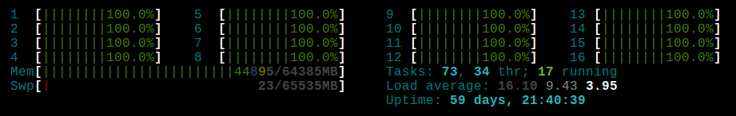
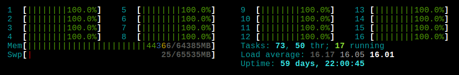
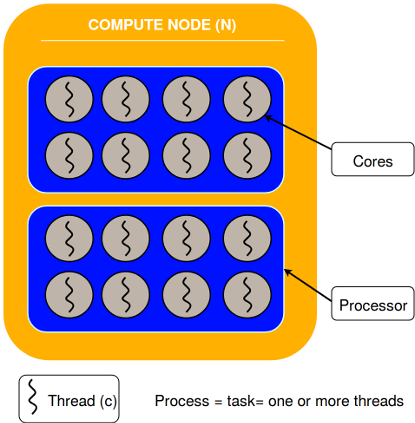

FAQ
What should be the CPU Load on my node?
The CPU Load is the measure of the amount of computational work that a compute node has been performing. It is always a good idea to keep monitoring this measure while you are computing in order to know how well your job is running and if it agrees with the given parameters.
To do this, we are going to log in to the compute node (or nodes) where your
job is running on, then we are going to use htop. For example, compute-0-0:
$ ssh compute-0-0
$ htop
Warning
You must have a running job on the compute node that you will log in to, otherwise, you will not be able to do it. In case you have an active session on a compute node and all of your jobs have finished their execution, Slurm is going to kill all the user’s remaining processes on that node, including your current session.
On the htop. screen you will find all the running processes of that node.
The first thing you should check is if there’s n number of running process plus
one (the htop process).
Now, check the CPU load, htop display 3 different values: the Average of 1 minute,
5 minutes and 15 minutes. As a general rule, you should expect that the values
will be the number of running cores that you asked for in your sbatch script, in
most of the cases is the same number of tasks n.
In this example, we ran a job in Cronos with 16 processes. Here, are the sbatch parameters.
#SBATCH --ntasks=16
#SBATCH --time=30:00
And here, is the screen of htop corresponding to the compute node that was running that job after 3 minutes.
and here is the screen of htop on the same node after 20 minutes.
As you can see, there is 17 running process (16 tasks + htop) and the load
average is close to 16.00. All the cores (16) are in use.
Do not mind if you find that your CPUs Load is less than expected, it does
not necessarily mean that your job is not running in an optimal way. It could be
due that your application can not reach that CPU load, for example, it
frequently does I/O processing.
Warning
However, if you have a considerably high CPUs Load
(e.g 40.00, 50.00, 300.00), no matter the case, this is
not a good thing and it will affect substantially
the performance of your job. You are OVER LOADING the node.
In which cases should I use srun?
There are three different ways in which jobs can be run by users in Slurm, using:
srun, salloc and sbatch.
srun is used to create an interactive job, this means the job is going to
be linked with the current tty and session of the user. If you disconnect it,
you will lose control over the job, or it might be killed. In case the resources that
you specified are not available, you will need to wait, keeping the session alive.
The std_out and std_err will be written in your terminal.
salloc is used to create jobs in allocated mode, the user is able to allocate
resources and, if available, interactively run jobs steps under that allocation
using a sub-shell created by Slurm. For further information see man salloc.
sbatch is used to submit a job for later execution using a script. We have
documentation about in the submit section.
When you use srun inside a sbatch script, srun takes all the
parameters given to that script, once the needed resources of your job are available and
your job is ready to start running, srun will communicate to the Slurm compute node
daemons to launch the ntasks of your job as it was specified.
In conclusion, as a short answer, you need to use srun inside your sbatch scripts
when your job uses more than one ntask in order to allow Slurm to distribute these
tasks in the cluster. Otherwise, the number of ntasks won’t take effect and
the job will be serial. Thus, you should use srun inside your MPI and Array
jobs, in the submit section we have some examples of these cases.
What is the difference between N, n and c?
N refers to the number of Nodes. Nodes can compute one or more
tasks (n), ideally a node can compute up to its number of cores at the same time, also
depending on the specific application. Each task has one or more threads (c).
We recommend to specify n tasks rather than N nodes, you should let
Slurm decides how many machines your job needs.
Here is a good explanation about the difference between Process and Threads.
How to know the name(s) of the allocated node(s) inside my job ?
The are cases where is useful to know which node(s) has been allocated to run my job. In order to make your script dynamic, you can ask Slurm that information using:
# SBATCH PAMATERTS
scontrol show hostname > hostnames.out
# job steps
This example store the name of the allocated machines in the file hostname.out.
You can use it inside a sbatch script or as a command in a salloc
sub-shell.